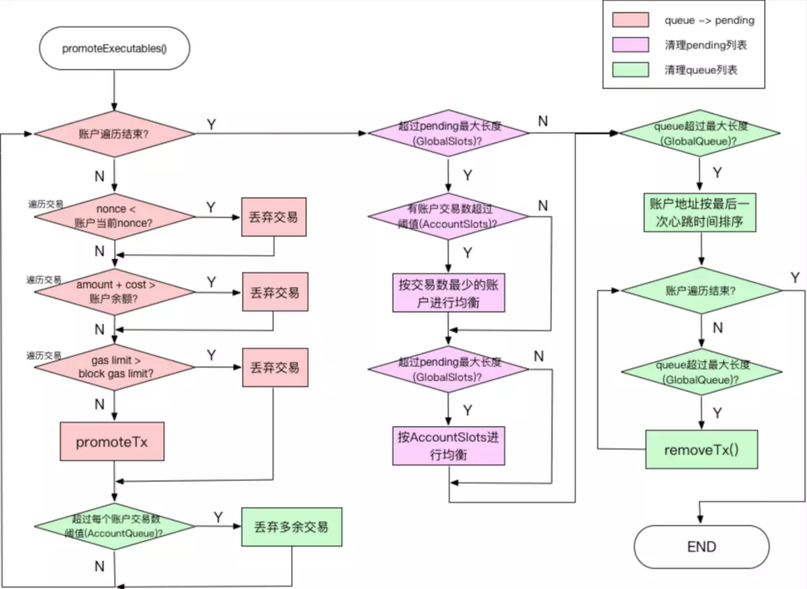
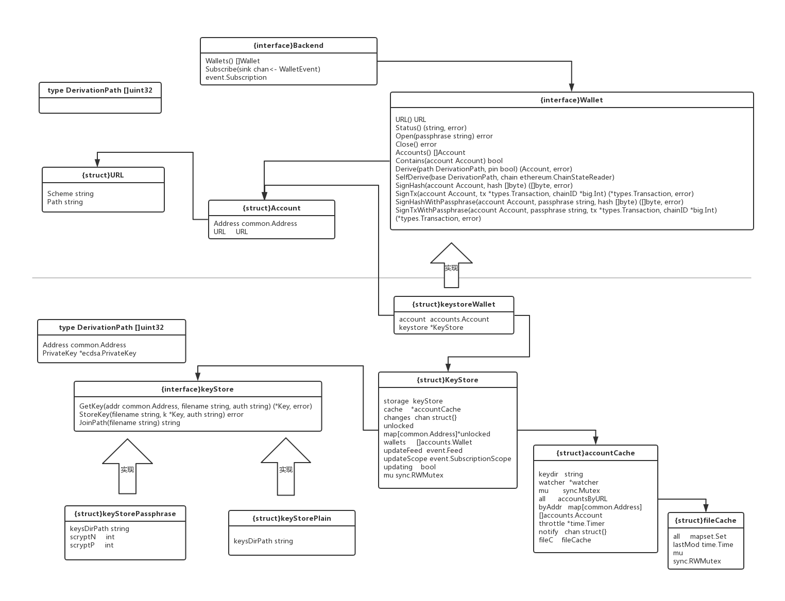
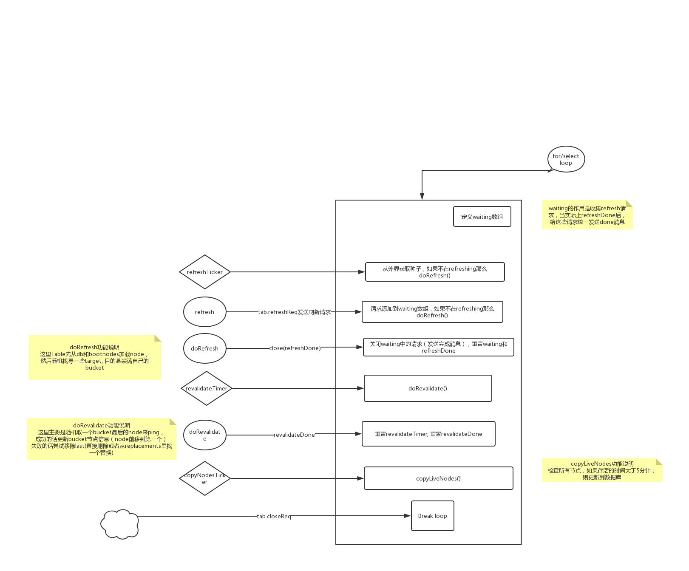

go-ethereum源码阅读笔记
Table of Contents
1 core
1.1 tx_pool
交易池接受的交易根据来源不同，逻辑上区分local交易和remote交易，local交易在某种程度上会优先处理。
交易池处理交易时，会将交易分成可执行交易和非可执行交易。
可执行交易是指从交易池中择优选出的一部分交易可以被执行，打包到区块中。
非可执行交易则相反，任何刚进入交易池的交易均属于非可执行状态，在某一个时刻才会提升为可执行状态。
1.1.1 交易池配置
交易池配置 {struct} TxPoolConfig, 可以在geth启动时通过参数配置。
可配置:
第一部分local交易相关：local交易来源地址、是否开启local交易特性。
第二部分日志相关，日志位置和保存的时间间隔
第三部分是交易price限制：remote交易进入交易池的最低price和替换交易时要求的价格涨幅
第四部分是交易池处理可执行交易和非可执行交易的数量限制以及生命周期限制。
1.1.2 交易池执行逻辑
- TODO 交易池结构
- 新建交易池和启动交易池
1. 初始化TxPool结构 2. 判断是否开启本地交易存储，如果开启了则加载之前存储在文件中的交易池交易 3. 订阅区块头事件 4. 开启事件循环loop 4.1. 接收到新交易(ChainHeadEvent): 将交易池中已经不符合要求的交易删除并更新整理交易 4.2. 由于系统停止导致的取消事件：直接返回 4.3. 每8s一次的交易池状况log 4.4. 每1分钟一次的移除不活跃地址的交易 4.5. 定时存储交易池内容到文件(如果开启的话)
- 接受新的交易时的处理
当交易池主要当loop接收到新的区块header后，调用reset方法处理，大体逻辑如下:
如果接收到的新header的父区块不是目前状态的区块，那么需要进行reorg:
根据新的header高度和旧的（也就是目前的）区块高度，找到要移除的交易discarded和要添加的交易included 这样一直追溯到新的区块和旧的区块能够追溯到同一祖先。 最后求的difference(discarded,included)的差集得到reinject。这个reinject里包含的交易是，因为区块reorg导致的之前有效的交易被取消了，这些交易之后要把它们加到交易池里
然后将交易池状态设置为新的区块对应的状态，
再将由于reorg产生的取消的交易（保存在reinject切片里），添加到内存池里，
之后整理交易池，移除无效的交易，调整交易所在queue还是pending队列，修改本地manageState里账户对应的Nonce等。
- 如何验证交易
validateTx检查一个交易是否合法(从size和price两方面) 1. size <= 32M 2. value >= 0 3. tx.Gas <= pool的最大Gas 4. tx正确签名 5. remote交易的gasPrice 大于等于 pool设置的最低gasPrice 6. 交易的Nonce大于pool目前保存的Nonce 7. 交易的Cost(value + GasPrice * GasLimit) 小于等于 发送者账户余额 8. 交易设置的GasLimit要大于其数据需要的Gas
- 交易池如何添加交易
1. 排除已有的交易和无效的交易 2. 如果交易池交易数量超过配置的数量，那么比较GasPrice，移除低的。如果加入的这个交易是最低的，则遗弃该交易 3. 如果pending交易中存在同一个发送者而且nonce相同的交易，根据GasPrice上调比例判断包里哪一个 4. 其它情况将交易添加到non-executable队列 5. 如果是local交易，则对发送者添加标记 6. journal里记录该交易
- 交易池如何调整交易所处对队列
逻辑在promoteExecutables方法里，这部分逻辑比较复杂，建议配合代码阅读
方法:promoteExcutables(accounts) 1.对于每个accounts里的addr, 首先遍历non-executable队列，移除不合要求的： 1.小于 该地址目前nonce 的交易 2.cost大于地址余额，或者gasLimit大于pool的最大gaslimit 2. 然后从addr的目前的nonce开始，依次取出递增的tx，然后执行promoteTx操作，放到executable 队列 3. 对于每个地址而言，如果non-executable队列里交易数量超过配置的，那么移除它们 之后检查总的pending和queued的tx数量是否达到配置的要求 pending数量【总体逻辑是，每个超标的addr依次减一个再看合不合标准】 // spamers : [] （有序队列，收集了所有账户的txlist超过配置的addr，按照txlist数量排序） // offenders: [] // 当pending不达标 而且 spammers有元素: 【根据offenders里最后一个txlist长度删减offenders里之前的txlist，每一轮减一个，直到达到要求或者最后一个txlist不是最少的】 // 每次从spammers里pop一个，然后添加到offenders里。当offenders里元素至少两个时候的时候: // 以offenders里最后一个addr的txlist数量为threshold, // 第offenders的第0个到倒数第二个，每个的txlist移除一个tx,再看pending是否达到要求，或者倒数第二个的txlist数量不超过threshold // // // 当pending不达标, spammers没元素里，但offenders里还有元素的时候： // 当offenders里最后一个txlist长度还超过配置的accountSlots长度时（这代表着，offenders里所有的addr的txlist都超过配置的accountSlots） // 每个offender的txlist移除一个tx // 再检查pending看看还要不要再来一轮删除 queued数量 按照heartbeat数量排序，从最近的交易开始移除多余的tx数量
demoteUnexecutables将pending/executable队列里不合要求的交易移除
1.nonce太老的移除
2.费用不够从pending移除，添加到queued里
在网上看到一张图，比较明晰，链接这里。

1.2 tx_journal
journal功能在内存池启动时从文件加载，之后每隔一段时间，保存当前交易池中的存在的本地交易。
相关逻辑在txjournal.go里
1.3 state 状态管理
{struct}Account 表示了一个以太坊账户（外部账户和合约账户） An account is a mapping between address and account state.
// Account is the Ethereum consensus representation of accounts. // These objects are stored in the main account trie. type Account struct { Nonce uint64 Balance *big.Int Root common.Hash // merkle root of the storage trie stateRootHash CodeHash []byte // CodeHash }
{struct}stateObject 是对 {struct}Account 的封装，底层指向{struct}Account， 添加了对账户操作时，添加操作日志（便于回退状态）， 添加了数据持久存储的支持（引入trie结构，trie结构通过{struct}Database与其交互），而且添加了操作缓存支持，
{struct}StateDB管理所有的账户（通过stateObject），一般是根据账户地址来对账户进行操作， 比如获取、修改余额、Nonce、Code、storage，创建或者删除账户，对整个statedb的快照以及回退等等。
{struct}ManagedState 则是对{struct}StateDB的封装，添加并发控制等
{struct}journal 记录了对账户的操作。 包括如下操作：
type ( // Changes to the account trie. createObjectChange struct { account *common.Address } resetObjectChange struct { prev *stateObject } suicideChange struct { account *common.Address prev bool // whether account had already suicided prevbalance *big.Int } // Changes to individual accounts. balanceChange struct { account *common.Address prev *big.Int } nonceChange struct { account *common.Address prev uint64 } storageChange struct { account *common.Address key, prevalue common.Hash } codeChange struct { account *common.Address prevcode, prevhash []byte } // Changes to other state values. refundChange struct { prev uint64 } addLogChange struct { txhash common.Hash } addPreimageChange struct { hash common.Hash } touchChange struct { account *common.Address prev bool prevDirty bool } )
1.3.1 TODO {struct}cachingDB {struct}cachedTire
当前有两种类型的 DB 实现了 Database 接口， 轻节点使用的 odrDatabase ，和正常节点端使用的带有缓存的 cachingDB 。
因为轻节点并不存储数据，需要通过向其他节点查询来获得数据，而 odrDatabase 就是这种数据读取方式的封装。
一个普通节点已内置 levelDB，为了提高读写性能，使用 cachingDB 对其进行一次封装。
core/state/database.go 下面定义了 Trie的接口。
而在 trie/trie.go 里面定义了 Trie的实现。 trie
1.4 asm
asm包里主要包含：
1.词法解析{struct}lexer 2.词法单元{struct}token
- 编译器{struct}compiler
- 此外还有个不断迭代指令的{struct}instructionIterator.
1.5 vm
1.5.1 结构
vm包里有如下主要的组成部分:
- evm的基础对象 {struct}EVM 和 对应的环境 {struct}Context
- {interface}Interpreter 和 对应实现 {struct}EVMInterpreter
- 表示合约和调用参数的 {struct}Contract
- vm里的操作码 {type}OpCode
- 内存 {struct}Memory
- {struct}Stack
- Opcode绑定具体的执行函数，gas消耗函数，stack验证函数，需要的内存数量，执行的结果状态等等 便成了 {struct}operation
- 以太坊不同阶段的op消耗的gas表 {struct}GasTable
- {interface}StateDB 是对于evm执行所需要的存储的封装，实际上会采用core/state/ 里的{struct}StateDB来具体化。
1.5.2 TODO 方法
主要方法:
{struct}EVM的 Call, CallCode, DelegateCall, StaticCall，这几个方法的实现类似，功能也类似：
文档中是这么描述的[TODO，具体差异后续补充]:
// CallCode differs from Call in the sense that it executes the given address' // code with the caller as context. // DelegateCall differs from CallCode in the sense that it executes the given address' // code with the caller as context and the caller is set to the caller of the caller. // StaticCall executes the contract associated with the addr with the given input // as parameters while disallowing any modifications to the state during the call. // Opcodes that attempt to perform such modifications will result in exceptions // instead of performing the modifications.
上面这些方法都调用了 run方法来执行，run方法的核心是调用EVM绑定的解释器的Run方法。
{struct}EVMInterpreter 的run方法，定义了执行合约调用的逻辑。 除去一些正确性检查大体逻辑如下:
从合约获取下一个opcode，转化成operation，新建memory, stack。 检查stack,检查readonly,计算所需memory-size，计算所需gas，执行operation， 根据执行结果判断是否继续获取下一个opcode
2 TODO trie
2.0.1 结构
{struct}Trie: Merkle Patricia Trie
{struct}Database: trie结构和磁盘存储的中间层，来将对trie的修改隔一段时间收集起来再写到磁盘上。
{interface}node: trie上的节点
{struct}fullNode, {struct}shortNode, {struct}hashNode, {struct}valueNode: 这些是MPT上的不同类型的节点，实现了{interface}node.
{struct}SecureTrie: 对{struct}Trie的封装，将所有访问的操作的key进行了hash(keccak256)再访问，目的是防止创建过长的node链导致访问时间变长。
{struct}Sync:
// Sync is the main state trie synchronisation scheduler, which provides yet // unknown trie hashes to retrieve, accepts node data associated with said hashes // and reconstructs the trie step by step until all is done.
3 accounts
3.1 accounts包
accounts包定义了以太坊账户相关概念和实现。
3.1.1 结构
{struct}Account表示一个以太坊账户
// Account represents an Ethereum account located at a specific location defined // by the optional URL field. type Account struct { Address common.Address `json:"address"` // Ethereum account address derived from the key URL URL `json:"url"` // Optional resource locator within a backend }
其中{struct}URL是表示一个可选的表示账户的地址
// URL represents the canonical identification URL of a wallet or account. // // It is a simplified version of url.URL, with the important limitations (which // are considered features here) that it contains value-copyable components only, // as well as that it doesn't do any URL encoding/decoding of special characters. // // The former is important to allow an account to be copied without leaving live // references to the original version, whereas the latter is important to ensure // one single canonical form opposed to many allowed ones by the RFC 3986 spec. // // As such, these URLs should not be used outside of the scope of an Ethereum // wallet or account. type URL struct { Scheme string // Protocol scheme to identify a capable account backend Path string // Path for the backend to identify a unique entity }
{interface}Wallet表示一个软件或者硬件钱包，用来管理一个或者一组从同一种子衍生的账户({interface}Account). 接口定义了了一个钱包应该有的方法，比如打开、关闭、查询状态、返回包含的账户、交易签名等
// Wallet represents a software or hardware wallet that might contain one or more // accounts (derived from the same seed). type Wallet interface { // URL retrieves the canonical path under which this wallet is reachable. It is // user by upper layers to define a sorting order over all wallets from multiple // backends. URL() URL // Status returns a textual status to aid the user in the current state of the // wallet. It also returns an error indicating any failure the wallet might have // encountered. Status() (string, error) // Open initializes access to a wallet instance. It is not meant to unlock or // decrypt account keys, rather simply to establish a connection to hardware // wallets and/or to access derivation seeds. // // The passphrase parameter may or may not be used by the implementation of a // particular wallet instance. The reason there is no passwordless open method // is to strive towards a uniform wallet handling, oblivious to the different // backend providers. // // Please note, if you open a wallet, you must close it to release any allocated // resources (especially important when working with hardware wallets). Open(passphrase string) error // Close releases any resources held by an open wallet instance. Close() error // Accounts retrieves the list of signing accounts the wallet is currently aware // of. For hierarchical deterministic wallets, the list will not be exhaustive, // rather only contain the accounts explicitly pinned during account derivation. Accounts() []Account // Contains returns whether an account is part of this particular wallet or not. Contains(account Account) bool // Derive attempts to explicitly derive a hierarchical deterministic account at // the specified derivation path. If requested, the derived account will be added // to the wallet's tracked account list. Derive(path DerivationPath, pin bool) (Account, error) // SelfDerive sets a base account derivation path from which the wallet attempts // to discover non zero accounts and automatically add them to list of tracked // accounts. // // Note, self derivaton will increment the last component of the specified path // opposed to decending into a child path to allow discovering accounts starting // from non zero components. // // You can disable automatic account discovery by calling SelfDerive with a nil // chain state reader. SelfDerive(base DerivationPath, chain ethereum.ChainStateReader) // SignHash requests the wallet to sign the given hash. // // It looks up the account specified either solely via its address contained within, // or optionally with the aid of any location metadata from the embedded URL field. // // If the wallet requires additional authentication to sign the request (e.g. // a password to decrypt the account, or a PIN code o verify the transaction), // an AuthNeededError instance will be returned, containing infos for the user // about which fields or actions are needed. The user may retry by providing // the needed details via SignHashWithPassphrase, or by other means (e.g. unlock // the account in a keystore). SignHash(account Account, hash []byte) ([]byte, error) // SignTx requests the wallet to sign the given transaction. // // It looks up the account specified either solely via its address contained within, // or optionally with the aid of any location metadata from the embedded URL field. // // If the wallet requires additional authentication to sign the request (e.g. // a password to decrypt the account, or a PIN code to verify the transaction), // an AuthNeededError instance will be returned, containing infos for the user // about which fields or actions are needed. The user may retry by providing // the needed details via SignTxWithPassphrase, or by other means (e.g. unlock // the account in a keystore). SignTx(account Account, tx *types.Transaction, chainID *big.Int) (*types.Transaction, error) // SignHashWithPassphrase requests the wallet to sign the given hash with the // given passphrase as extra authentication information. // // It looks up the account specified either solely via its address contained within, // or optionally with the aid of any location metadata from the embedded URL field. SignHashWithPassphrase(account Account, passphrase string, hash []byte) ([]byte, error) // SignTxWithPassphrase requests the wallet to sign the given transaction, with the // given passphrase as extra authentication information. // // It looks up the account specified either solely via its address contained within, // or optionally with the aid of any location metadata from the embedded URL field. SignTxWithPassphrase(account Account, passphrase string, tx *types.Transaction, chainID *big.Int) (*types.Transaction, error) }
{interface}Backend用来管理一组{interface}Wallet
// Backend is a "wallet provider" that may contain a batch of accounts they can // sign transactions with and upon request, do so. type Backend interface { // Wallets retrieves the list of wallets the backend is currently aware of. // // The returned wallets are not opened by default. For software HD wallets this // means that no base seeds are decrypted, and for hardware wallets that no actual // connection is established. // // The resulting wallet list will be sorted alphabetically based on its internal // URL assigned by the backend. Since wallets (especially hardware) may come and // go, the same wallet might appear at a different positions in the list during // subsequent retrievals. Wallets() []Wallet // Subscribe creates an async subscription to receive notifications when the // backend detects the arrival or departure of a wallet. Subscribe(sink chan<- WalletEvent) event.Subscription }
{[]uint32}DerivationPath 定义了BIP-32和BIP-44规定的分层确定性钱包地址路径
// DerivationPath represents the computer friendly version of a hierarchical // deterministic wallet account derivaion path. // // The BIP-32 spec https://github.com/bitcoin/bips/blob/master/bip-0032.mediawiki // defines derivation paths to be of the form: // // m / purpose' / coin_type' / account' / change / address_index // // The BIP-44 spec https://github.com/bitcoin/bips/blob/master/bip-0044.mediawiki // defines that the `purpose` be 44' (or 0x8000002C) for crypto currencies, and // SLIP-44 https://github.com/satoshilabs/slips/blob/master/slip-0044.md assigns // the `coin_type` 60' (or 0x8000003C) to Ethereum. // // The root path for Ethereum is m/44'/60'/0'/0 according to the specification // from https://github.com/ethereum/EIPs/issues/84, albeit it's not set in stone // yet whether accounts should increment the last component or the children of // that. We will go with the simpler approach of incrementing the last component. type DerivationPath []uint32
3.1.2 TODO 方法实现
3.2 keystore包
keystore包里定义了以“keystore”文件方式存储以太坊账户信息的相关结构和实现。
3.2.1 结构
{interface}keyStore定义了一个“keystore”实现应该有的方法，包括获取/存储{struct}Key,获取文件完整目录等。
type keyStore interface { // Loads and decrypts the key from disk. GetKey(addr common.Address, filename string, auth string) (*Key, error) // Writes and encrypts the key. StoreKey(filename string, k *Key, auth string) error // Joins filename with the key directory unless it is already absolute. JoinPath(filename string) string }
这里面的{struct}Key表示一个账户最本质的内容——私钥，以及根据私钥计算的地址等。
type Key struct { Id uuid.UUID // Version 4 "random" for unique id not derived from key data // to simplify lookups we also store the address Address common.Address // we only store privkey as pubkey/address can be derived from it // privkey in this struct is always in plaintext PrivateKey *ecdsa.PrivateKey }
{struct}keyStorePassphrase和{struct}keyStorePlain是对{interface}keyStore的两个实现。
其中，{struct}keyStorePassphrase是以密码passphrase的方式来存储私钥成文件，而{struct}keyStorePlain是直接不加密存储成文件。
type keyStorePassphrase struct { keysDirPath string scryptN int scryptP int // skipKeyFileVerification disables the security-feature which does // reads and decrypts any newly created keyfiles. This should be 'false' in all // cases except tests -- setting this to 'true' is not recommended. skipKeyFileVerification bool } type keyStorePlain struct { keysDirPath string }
{struct}keystoreWallet实现了{interface}accounts.Wallet接口。 一个keystore钱包实际上只包含了一个账户
// keystoreWallet implements the accounts.Wallet interface for the original // keystore. type keystoreWallet struct { account accounts.Account // Single account contained in this wallet keystore *KeyStore // Keystore where the account originates from }
{struct}KeyStore是整个keystore包的主要逻辑实现：
- 管理一个私钥如何存储在硬盘文件上(通过绑定的{interface}keyStore)
- 管理缓存来避免总是读写文件(通过绑定的{struct}accountCache)
- 管理一个ketstore目录下的所有的account
- 管理账户的新建导入导出删除等
// KeyStore manages a key storage directory on disk. type KeyStore struct { storage keyStore // Storage backend, might be cleartext or encrypted cache *accountCache // In-memory account cache over the filesystem storage changes chan struct{} // Channel receiving change notifications from the cache unlocked map[common.Address]*unlocked // Currently unlocked account (decrypted private keys) wallets []accounts.Wallet // Wallet wrappers around the individual key files updateFeed event.Feed // Event feed to notify wallet additions/removals updateScope event.SubscriptionScope // Subscription scope tracking current live listeners updating bool // Whether the event notification loop is running mu sync.RWMutex }
{struct}accountCache是keystore目录下所有账户的一个索引和管理方式
// accountCache is a live index of all accounts in the keystore. type accountCache struct { keydir string watcher *watcher mu sync.Mutex all accountsByURL byAddr map[common.Address][]accounts.Account throttle *time.Timer notify chan struct{} fileC fileCache } // fileCache是文件变动时间的一个记录 // fileCache is a cache of files seen during scan of keystore. type fileCache struct { all mapset.Set // Set of all files from the keystore folder lastMod time.Time // Last time instance when a file was modified mu sync.RWMutex }
3.2.2 TODO 方法实现
3.3 结构关系图
下面这张图展示来accounts包和keystore包结构体和接口之间的关系: 
4 p2p
4.1 discover包
table.go文件里对主要实现了一个Table结构，该结构用来管理连接的节点的信息。
table.go所属的是discover包，discover包实现了一种类似kad协议的节点发现协议。
当实例化一个Table的时候，会创建一个 loop() 的goroutine, loop用来管理节点的刷新、验证等工作，下面我整理了下loop的大体逻辑图:
